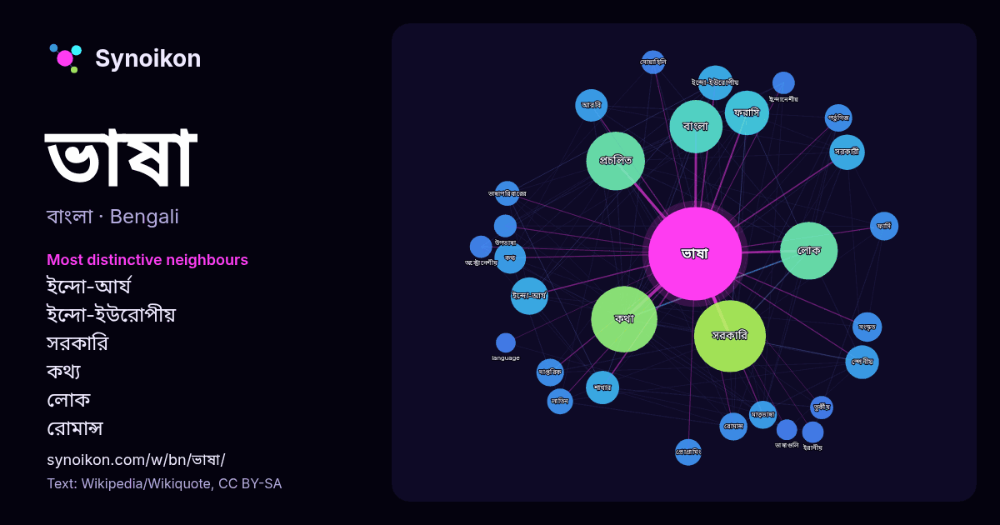

বাংলা · জনপ্রিয় শব্দ
ভাষা
“language” · উইকিপিডিয়া, Wikiquote থেকে 2836টি প্রয়োগে এর চারপাশে পাওয়া শব্দ।

সবচেয়ে স্বতন্ত্র প্রতিবেশী
- ইন্দো-আর্য 57×
- ইন্দো-ইউরোপীয় 50×
- সরকারি 45×
- কথ্য 38×
- লোক 38×
- রোমান্স 36×
- প্রচলিত 35×
- স্পেনীয় 32×
- দাপ্তরিক 32×
- ফরাসি 31×
- মাতৃভাষা 30×
- ভাষাপরিবারের 29×
- ফার্সি 28×
- শাখার 28×
- সোয়াহিলি 26×
- তুর্কীয় 26×
- অস্ট্রোনেশীয় 25×
- পর্তুগিজ 24×
- প্রোগ্রামিং 24×
- আরবি 24×
× = সাধারণ উইকিপিডিয়া টেক্সটের চেয়ে কত গুণ বেশি।
সবচেয়ে ঘন ঘন প্রতিবেশী
- সরকারি 279
- কথা 238
- প্রচলিত 187
- লোক 180
- বাংলা 153
- ফরাসি 107
- পরিবারের 94
- ইন্দো-আর্য 76
- প্রধান 68
- সরকারী 68
- অন্যান্য 67
- ইন্দো-ইউরোপীয় 66
- ভারতের 66
- স্থানীয় 61
- স্পেনীয় 61
- ব্যবহৃত 60
- শাখার 60
- আরবি 57
- এখানকার 55
- কথ্য 54
প্রসঙ্গে
- মানুষের মধ্যে যোগাযোগ স্থাপনে সহায়তা করে। ভাষা" শব্দটি মূলত সংস্কৃত ভাষা থেকে এসেছে। "ভাষা" শব্দটি সংস্কৃত "ভাষ্" ধাতু থেকে এসেছে, যার অর্থ "বলা" বা "কথা Wikipedia snippets · ভাষা
- অধীনে আসে এবং ১৮৩৬ সালে বাংলা ভাষাকে আসামে সরকারি ভাষা করা হয়। এর প্রায় ৩৬ বছর পরে ১৮৭২ সালে অসমীয়া ভাষা রাজ্যটির সরকারি ভাষা হিসেবে ফিরে আসে। বর্তমানে Wikipedia snippets · অসমীয়া ভাষা
- গঠিত। কক অর্থ "ভাষা" আর বরক অর্থ "মানুষ", বিশেষিত অর্থে ত্রিপুরি জাতির মানুষ; অর্থাৎ ককবরক কথাটির অর্থ ত্রিপুরি মানুষের ভাষা। ককবরক ভাষাটি বিভিন্ন রূপে Wikipedia snippets · ককবরক ভাষা
- ভাষাটি ব্যবহার করেন। এই ভাষাটি মহাত্মা গান্ধীর এবং মুহাম্মদ আলী জিন্নাহর মাতৃভাষা। গুজরাতি (কখনও গুজরাতি) একটি আধুনিক ইন্দো-আর্য ভাষা যা সংস্কৃত ভাষা Wikipedia snippets · গুজরাতি ভাষা
- ভারতের একটি ধ্রুপদী দ্রাবিড় ভাষা। ভাষাটি তামিলের সাথে ঘনিষ্ঠভাবে সম্পর্কিত, তবে তামিল ভাষার চেয়ে সংস্কৃত ভাষা মালয়ালম ভাষাকে বেশি প্রভাবিত করেছে। মালয়ালম Wikipedia snippets · মালয়ালম ভাষা
- ধিবেহী ভাষা (ދިވެހި, উচ্চারণ: ধিৱেহী) বা দিবেহী ভাষা হলো একটি ইন্দো-ইউরোপীয় ভাষাপরিবারের ইন্দো-আর্য শাখার একটি ভাষা যা মালদ্বীপের রাষ্ট্রভাষা। বর্তমানে Wikipedia snippets · ধিবেহী ভাষা
- কোঙ্কণী ভাষা (দেবনাগরী লিপিতে: कोंकणी; রোমান লিপিতে: Konknni; কন্নড় লিপিতে: ಕೊಂಕಣಿ; মালয়ালম লিপিতে: കൊങ്കണി; সলিআব: koṃkaṇī) একটি ইন্দো-আর্য ভাষা যা ভারতের Wikipedia snippets · কোঙ্কণী ভাষা
- দাপ্তরিক ভাষা হল এমন একটি ভাষা যা কোনো নির্দিষ্ট দেশ বা রাষ্ট্রে ব্যবহারের জন্য সাংবিধানিকভাবে স্বীকৃত ও বলবৎকৃত হয়। সাধারণত কোনো দেশের রাষ্ট্রভাষা ঐ Wikipedia snippets · দাপ্তরিক ভাষা
আরও শব্দ
- অরণ্য
- আয়না
- ইতিহাস
- ঈশ্বর
- কাজ
- কুকুর
- ক্ষমতা
- খাদ্য
- গান
- গ্রীষ্ম
- ঘড়ি
- ঘণ্টা
- ঘোড়া
- ছায়া
- জননী
- জলবায়ু
- জীবন
- ঝড়
- টাকা
- ট্রেন
- দারুচিনি
- দ্বীপ
- নক্ষত্র
- নীরবতা
- পরিবার
- পানি
- পাহাড়
- প্রকৃতি
- বাগান
- বিজ্ঞান
- বিড়াল
- বৃষ্টি
- মধু
- মরুভূমি
- মানচিত্র
- মৃত্যু
- রাস্তা
- রুটি
- লবণ
- শরৎ
- শহর
- শিল্প
- শীত
- সত্য
- সময়
- সেতু
- সোনা
- স্বাস্থ্য
- হৃদয়
2026-10-09 তারিখে ডিফল্ট সেটিংসে (±5 শব্দ, মাঝারি কর্পাস) আগে থেকে গণনা করা। ইন্টারঅ্যাক্টিভ মানচিত্র লাইভ ডেটা দিয়ে এটি হালনাগাদ করতে পারে।
যন্ত্রে অনূদিত ইন্টারফেস; সংশোধন স্বাগত।